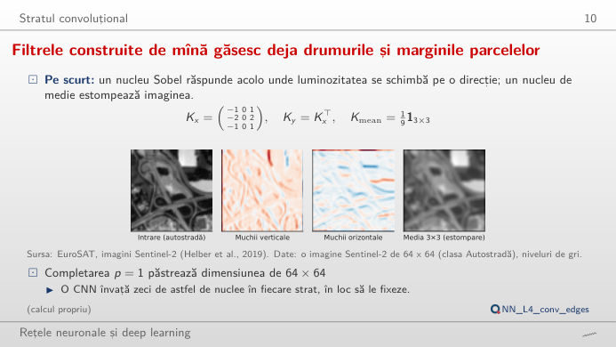
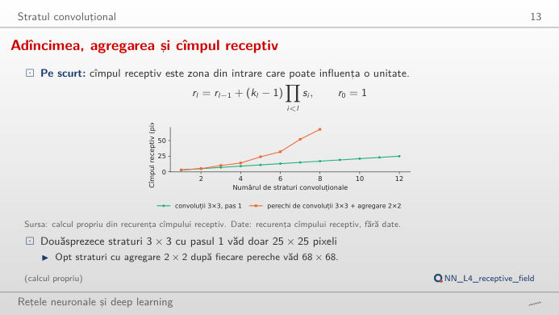
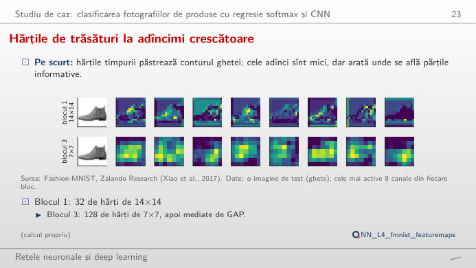
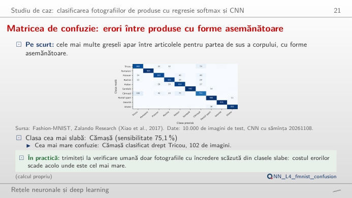
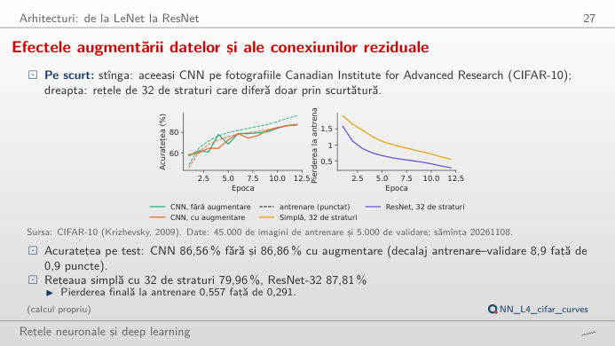
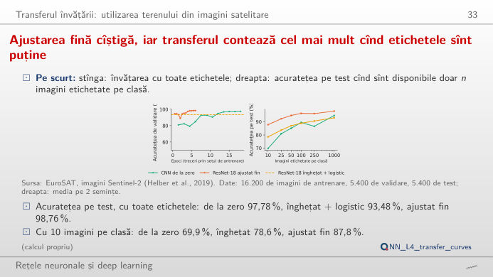

În stînga este slide-ul din curs, în dreapta aceeași figură, recalculată în browser cînd modificați un control. Butonul ▶ modifică parametrul principal pas cu pas. Sub fiecare figură: o sinteză numerică, o întrebare pentru sală și Quantlet-ul cu codul figurii. Primul bloc aplică o convoluție, chiar în browser, pe o imagine reală din satelit; hărțile de caracteristici provin din CNN antrenată în curs; curbele sînt antrenările ei salvate.
Stratul convoluțional · Fotografii de produse: trăsăturile învățate de o CNN · Rețele mai adînci și transferul învățării
Stratul convoluțional
Filtrele construite de mînă găsesc deja drumurile și marginile parcelelor

Răspuns
Nouă ponderi și un termen liber, oricare ar fi mărimea imaginii (un strat dens de la 4.096 de pixeli la 4.096 de ieșiri ar avea nevoie de circa 16,8 milioane de ponderi). Cu bordare cu zero, ieșirea păstrează 64 × 64 de pixeli; fără ea, (64 − 3)/1 + 1 = 62; cu pasul 2, (64 + 2 − 3)/2 + 1 = 32 (partea întreagă). Filtrul Sobel vertical calculează o diferență stînga-minus-dreapta: valori mari, pozitive sau negative, acolo unde luminozitatea se schimbă de la stînga la dreapta, ca pe marginile autostrăzii, și zero pe cîmpurile uniforme. Treceți la imaginea cu rîul sau cu zona rezidențială: același filtru găsește alte muchii.
Adîncimea, agregarea și cîmpul receptiv

Răspuns
Fără agregare, cîmpul receptiv crește cu 2 pixeli pe strat: 13 pixeli după 6 straturi, 25 după 12, deci ar fi nevoie de aproximativ 32 de straturi. Cu o agregare 2 × 2 după fiecare două convoluții, el crește geometric: 68 de pixeli după 8 convoluții, mai mult decît întreaga imagine. Nucleele mai mari (5 × 5, 7 × 7) îl cresc mai repede, dar costă 25 sau 49 de ponderi pe pereche de canale în loc de 9; suprapunerea nucleelor mici cu agregare este calea mai ieftină de a vedea departe.
Fotografii de produse: trăsăturile învățate de o CNN
Hărțile de trăsături la adîncimi crescătoare

Răspuns
CNN dă „Tricou” cu 69,7% pentru această cămașă: este eroarea cea mai frecventă a rețelei, 102 din cele 1.000 de cămăși de test sînt clasificate drept tricouri, iar sensibilitatea clasei este 75,1%. Canalele din blocul 1 (14 × 14) seamănă încă cu imaginea: muchii, guler, fundal. Canalele din blocul 3 (7 × 7) sînt grosiere și răspund la părți ale obiectului; media lor pe hartă este ceea ce citește clasificatorul. Pentru celelalte nouă imagini de test, CNN este aproape sigură (99,8% sau mai mult).
Matricea de confuzie: erori între produse cu forme asemănătoare

Răspuns
Cămașa este clasa cea mai dificilă pentru toate cele trei modele: sensibilitatea este 56,9% pentru regresia softmax, 68,2% pentru MLP (perceptronul multistrat) și 75,1% pentru CNN; cea mai mare confuzie este mereu cămașă → tricou (138, 124 și 102 imagini). Acuratețea crește de la 84,6% (7.850 de parametri) la 89,0% (235.146) și 92,9% (140.778): CNN are mai puțini parametri decît MLP și face cu 37% mai puține erori, pentru că folosește aceleași ponderi în toate pozițiile. Erorile rămase sînt între clase asemănătoare vizual (cămașă, tricou, pulover, palton).
Rețele mai adînci și transferul învățării
Efectele augmentării datelor și ale conexiunilor reziduale

Răspuns
Este problema degradării: după 12 epoci, rețeaua simplă are încă o pierdere la antrenare de 0,557 și o acuratețe pe test de 80,0%, în timp ce rețeaua reziduală ajunge la 0,291 și 87,8%. Rețeaua simplă mai adîncă nu se supraajustează (și acuratețea ei la antrenare este mică); este greu de optimizat. Conexiunile de ocolire permit fiecărui bloc să învețe o corecție a identității și lasă gradientul să se propage înapoi neschimbat. CNN mică arată cealaltă problemă: fără augmentare, acuratețea la antrenare ajunge la 96,1%, față de 87,2% pe validare; cu augmentare, diferența scade la 0,9 puncte.
Ajustarea fină este cea mai precisă, iar transferul contează cel mai mult cînd etichetele sînt puține

Răspuns
O CNN antrenată de la zero ajunge la 69,9% acuratețe pe test (media a 2 semințe), un ResNet-18 înghețat cu o regresie logistică pe caracteristicile lui la 78,6%, iar un ResNet-18 ajustat fin la 87,8%. Diferența se închide pe măsură ce etichetele cresc: cu 1.000 de imagini pe clasă, cele trei ajung la 94,7%, 93,0% și 98,1%, iar cu toate cele 16.200 de imagini de antrenare la 97,8%, 93,5% și 98,8%. Caracteristicile învățate pe fotografiile ImageNet se transferă la imaginile din satelit; contează cel mai mult cînd etichetele sînt puține. Scăderea CNN de la zero la 250 de imagini (86,6% după 89,5% la 100) arată zgomotul a două semințe.
Date: EuroSAT (imagini Sentinel-2 de 64 × 64 de pixeli, 10 m pe pixel, 10 clase de utilizare a terenului; Helber et al., 2019), Fashion-MNIST (Zalando, fotografii de produse de 28 × 28, în tonuri de gri; 10.000 de imagini de test), CIFAR-10 (fotografii color de 32 × 32). Rețelele și semințele (20261108) sînt cele din curs (analysis_L4.py); ResNet-18 = rețea reziduală cu 18 straturi, preantrenată pe ImageNet; MLP = perceptron multistrat; ReLU = unitate liniară rectificată.